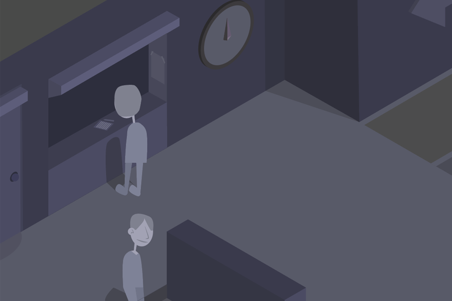

Contact me
Click here to send me an email.
This is an Illustrator piece of a man going through a subway station, from entering the building to entering the subway. Every element keeps an isometric form, meaning this seemingly 3D drawing is completely 2D, carefully using grids to keep its consistency.
Here are some close-up pictures for detail.
This was the sketch which had later been revamped into what you saw above.
Click here to send me an email.